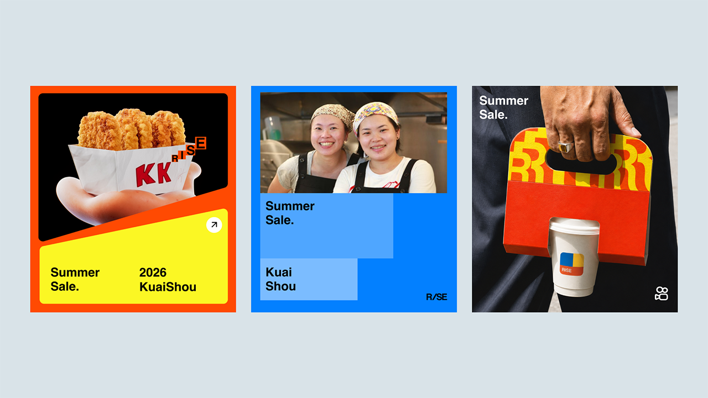
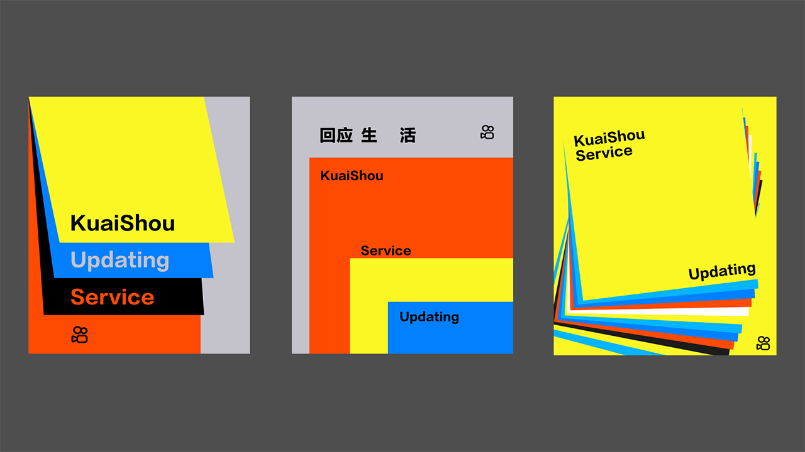
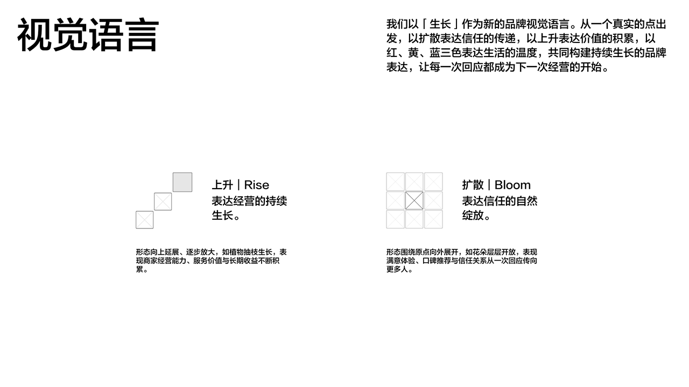

Moodboard
情绪板定义品牌的视觉气候，而不是固定模板。画面应同时具备真实生活、高饱和色彩、清晰结构和直接的人物关系，用来判断新素材是否属于同一个品牌世界。
Visual Direction
以真实人物和服务场景为主，品牌三色作为结构层与情绪放大器。画面不追求统一滤镜，而保持直接、明亮和有行动感。




真实
生长
生长
Selection Principles
选择素材时优先判断人与服务的关系是否真实，其次判断品牌色能否作为结构层进入画面。避免纯棚拍摆姿、过度柔焦、低对比灰调和没有具体场景的空泛氛围图。
真实具体的人与服务
明亮清晰的色彩对比
避免空泛、柔焦、无场景